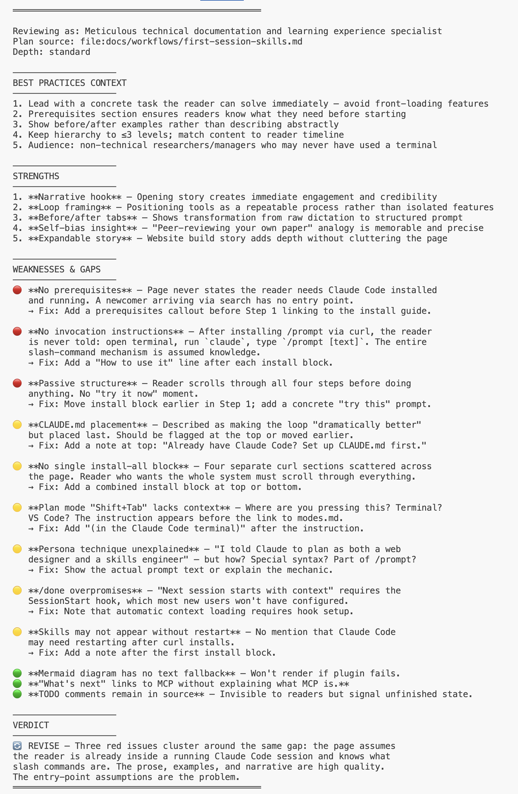

Prompt, Plan, Review, Revise¶
I dictated a rambling description of a website I wanted. Ninety minutes later — on a plane, on airline Wi-Fi — this site was live. Not perfect. But actually useful, which is more than I expected.
This page shows the method behind that. It's four steps that loop: structure your thinking, make a plan, stress-test it with fresh eyes, then execute and capture what you learned. The steps use a mix of built-in features and installable skills. Everything here works with nothing but Claude Code — no integrations, no configuration files, no external services.
The loop¶
Most people treat AI interactions as one-shot: type a prompt, get an answer. The loop turns it into a process. Each step exists because the previous one isn't enough on its own.
/promptstructures your thinking so you're not feeding Claude garbage- Plan mode forces Claude to think before it acts
/review-plancatches the blind spots that Claude (and you) missed — by bringing in a fresh agent that's never seen the conversation/donecaptures what happened so the next session starts with context instead of from scratch
graph LR
A["Brain dump"] --> B["/prompt"]
B --> C["Plan mode"]
C --> D["/review-plan"]
D --> E["Revise & execute"]
E --> F["/done"]
F -->|"next session"| A
D -->|"needs work"| CHow I built this website in 90 minutes on a plane
I wanted to share my AI toolkit as a website. Never built a website. Didn't particularly want to spend a lot of time learning how.
I brain-dumped what I wanted and ran /prompt. I also told it to plan from two personas: an expert web designer used to working with academics, and a Claude Code skills engineer. You can pick whatever personas suit the problem.
I put Claude in planning mode — Shift+Tab on a Mac — so it could read files, explore, and think, but couldn't actually execute anything. The two personas debated and converged on a plan.
Now, I didn't trust this plan. Claude critiquing its own work in the same conversation is like asking someone to peer-review their own paper. So I ran /review-plan, which spins up a separate agent in a fresh context. It's never seen the conversation.
I picked the reviewer personas deliberately:
- A complete newbie who's never touched Claude Code but will use this site
- An advanced user who wants real utility
- A website design critic who likes sleek and simple
- An expert in building online tutorials
They argued amongst themselves and found plenty wrong. I ran /review-plan a second time with the tutorial expert taking the lead. More problems. Each round took about five minutes.
After the agents revised the plan, I reviewed it to make sure it made a modicum of sense and said go. A couple manual steps — buy the URL, point DNS at GitHub. After that it just built a site. Maybe 30 minutes of execution.
The site had problems — design, content, things that would've taken me hours to fix by hand. Instead of going through it in detail, I just narratively brain-dumped everything I found wrong and told the agents to reconsider and rewrite accordingly.
About 90 minutes after starting — still on the plane — I had a working website. I honestly don't know half of what's on it. I've skimmed pages here and there to catch obvious problems. Mostly I just periodically tell Claude to send a copy editor agent or a web design expert to go through it.
Step 1: Structure your thinking — /prompt¶
/prompt takes your rough, conversational request and reformats it into a structured prompt — then executes it. It bridges the gap between how you naturally speak and what gets the best AI output.
Field note
I stopped trying to write good prompts. I dictate stream-of-consciousness into Wispr Flow — half-formed ideas, wrong words, the works — and /prompt restructures the mess into a proper prompt. Role, task, constraints, output format. The difference surprised me.
OK so I want to take all of the more polished skills and workflows
and knowledge I've developed, both about general AI usage and tools
but especially about Claude Code, and push it out as a website. I
want it aimed at researchers and managers who aren't that technical,
but I also want material for power users who are used to Claude Code
but might not have used some of my skills like proposal writing and
the review plan stuff.
I have no idea how to set up or host a website so I need step by
step instructions on that — like literally what service to use,
how to get a URL, how to make it live, all of it. I want it to be
open source and free.
For the planning I want you to work as two personas. One should be
an expert web designer who's used to working with academics and
knows how to make documentation sites that don't look terrible. The
other should be a Claude Code skills engineer who understands how
skills and agents and integrations actually work and can make sure
the site structure matches how people would actually learn this.
I want the two of them to debate the structure before committing.
The designer should push back if it's too technical. The skills
engineer should push back if it's too shallow.
And every instruction on the site needs to be something you can
copy and paste. No assumed knowledge. The audience has literally
never used a terminal.
Role: You are two experts collaborating on a project plan.
Persona 1 — Expert web designer experienced with academic
documentation sites. Prioritize clarity, visual hierarchy, and
mobile responsiveness. Push back on anything too technical.
Persona 2 — Claude Code skills engineer who understands skills,
agents, MCP integrations, and CLAUDE.md architecture. Ensure
the site structure matches how someone actually learns this
system. Push back on anything too shallow.
Task: Design and build a documentation website for sharing Claude
Code skills, workflows, and setup guides. Debate the site structure
between both personas before converging on a single plan.
Context: The author is a professor who built an AI workflow system
using Claude Code — skills, email triage, meeting capture, project
dashboards, proposal writing. He wants to share it publicly.
Two audiences: (1) researchers and managers with no technical
background who've never opened a terminal, and (2) existing Claude
Code users who want advanced skills and workflows.
Constraints:
- Open source and free to host
- Mobile-responsive
- Every instruction must be copy-pasteable — no assumed knowledge
- Recommend the hosting platform and tech stack (the author has
no web development experience)
- Include step-by-step deployment instructions (domain, hosting,
making it live)
- The two personas must debate structure before committing
Output: A complete project plan including: recommended tech stack
with rationale, site structure, navigation hierarchy, content
outline for each page, and step-by-step deployment instructions.
Include key disagreements between the personas and how they
were resolved.
Remember: the author has never built a website. If a step requires
knowledge he doesn't have, explain it or recommend a service that
handles it.
Here's what a well-structured prompt looks like — each section labeled. Not every prompt needs all six parts, but knowing them lets you diagnose why a prompt isn't working:
Role
You are two experts collaborating. Persona 1 — Expert web designer experienced with academic documentation sites. Push back on anything too technical. Persona 2 — Claude Code skills engineer who understands skills, agents, and integrations. Push back on anything too shallow.
Context
The author is a professor who built an AI workflow system using Claude Code — skills, email triage, meeting capture, project dashboards, proposal writing. He wants to share it publicly. Two audiences: (1) researchers and managers who've never opened a terminal, and (2) existing Claude Code users who want advanced skills.
Task
Design and build a documentation website for sharing Claude Code skills, workflows, and setup guides. Debate the site structure between both personas before converging on a single plan.
Constraints
- Open source and free to host
- Mobile-responsive
- Every instruction must be copy-pasteable — no assumed knowledge
- Recommend the hosting platform and tech stack (author has no web dev experience)
- Include step-by-step deployment instructions
- The two personas must debate structure before committing
Output Format
A complete project plan including: recommended tech stack with rationale, site structure, navigation hierarchy, content outline, and step-by-step deployment instructions. Include key disagreements and how they were resolved.
Bookend
Remember: the author has never built a website. If a step requires knowledge he doesn't have, explain it or recommend a service that handles it.
You are two experts collaborating on a project plan.
Persona 1 — Expert web designer experienced with academic
documentation sites. Push back on anything too technical.
Persona 2 — Claude Code skills engineer who understands skills,
agents, and integrations. Push back on anything too shallow.
The author is a professor who built an AI workflow system using
Claude Code — skills, email triage, meeting capture, project
dashboards, proposal writing. He wants to share it publicly.
Two audiences: (1) researchers and managers who've never opened
a terminal, and (2) existing Claude Code users who want advanced
skills and workflows.
Design and build a documentation website for sharing Claude Code
skills, workflows, and setup guides. Debate the site structure
between both personas before converging on a single plan.
Constraints:
- Open source and free to host
- Mobile-responsive
- Every instruction must be copy-pasteable — no assumed knowledge
- Recommend the hosting platform and tech stack (author has no
web dev experience)
- Include step-by-step deployment instructions
- The two personas must debate structure before committing
Output: Recommended tech stack with rationale, site structure,
navigation hierarchy, content outline, and step-by-step
deployment instructions. Include key disagreements and resolutions.
Remember: the author has never built a website. If a step requires
knowledge he doesn't have, explain it or recommend a service
that handles it.
For the full breakdown, see The Anatomy of a Good Prompt and Depth Calibration on the Prompt Engineering page.
Install (full bundle — 4 files):
What these commands do
mkdir -p creates a folder (and any parent folders needed). curl -o downloads a file from the internet and saves it to your computer at the path you specify. You're downloading skill files from this site's GitHub repository into Claude Code's commands folder.
mkdir -p ~/.claude/commands/prompt-references
curl -o ~/.claude/commands/prompt.md \
https://raw.githubusercontent.com/chrisblattman/claudeblattman/main/skills/prompt.md
curl -o ~/.claude/commands/prompt-only.md \
https://raw.githubusercontent.com/chrisblattman/claudeblattman/main/skills/prompt-only.md
curl -o ~/.claude/commands/prompt-refine.md \
https://raw.githubusercontent.com/chrisblattman/claudeblattman/main/skills/prompt-refine.md
curl -o ~/.claude/commands/prompt-references/formatting-core.md \
https://raw.githubusercontent.com/chrisblattman/claudeblattman/main/skills/prompt-references/formatting-core.md
Variants:
/prompt— Format and execute. Use this for most things./prompt-only— Format without executing. Use when building reusable prompts or when you want to run the prompt in a different tool (Claude.ai, ChatGPT)./prompt-refine— Review and improve an existing prompt. Audits against a quality checklist and outputs an improved version with a changelog.
Step 2: Think before acting — Plan mode¶
Plan mode isn't a skill — it's built in. Press Shift+Tab and Claude switches to a mode where it can read files, explore your codebase, and propose approaches, but can't execute anything. Nothing changes on disk until you say so.
This matters because the default mode will start editing files as soon as it has a plan. Plan mode forces a pause. You review, push back, and iterate before anything happens.
The persona technique: For the website, I told Claude to plan as both a web designer and a skills engineer. They debated and converged on a single plan. You can assign whatever personas suit the problem — the point is to get multiple perspectives before committing to an approach.
For more on how modes work, see How Claude Code Thinks.
Step 3: Stress-test with fresh eyes — /review-plan¶
This is the intellectual centerpiece of the loop.
Claude reviewing its own plan in the same conversation is like asking someone to peer-review their own paper. It's seen all the reasoning. It knows why every decision was made. It's structurally incapable of seeing its own blind spots.
/review-plan fixes this. It spins up a fresh agent — a separate instance of Claude that has never seen your conversation. That agent reads the plan cold, auto-detects the domain, assigns an appropriate expert persona, researches best practices, and returns a red/yellow/green assessment with specific recommendations.
Here's what a /review-plan scorecard looks like — this one is from a review of this very page:

Install:
curl -o ~/.claude/commands/review-plan.md \
https://raw.githubusercontent.com/chrisblattman/claudeblattman/main/skills/review-plan.md
Usage:
/review-plan # Review the most recent plan
/review-plan file:~/Documents/plan.md # Review a specific file
/review-plan quick # Skip web research
/review-plan depth:deep focus:feasibility # Deep review, weighted toward feasibility
Iteration matters. I ran /review-plan twice on the website plan. The first round caught structural problems — missing pages, unclear navigation. The second round, with the tutorial expert leading, caught usability issues — jargon, assumed knowledge, missing prerequisites. Each round took about five minutes.
Example: Reviewing this very page
I ran /review-plan on this page — the one you're reading now — with a "technical documentation and learning experience specialist" persona. It came back with a REVISE verdict and three red flags:
- No prerequisites — The page never states you need Claude Code installed. A newcomer arriving via search has no entry point.
- No invocation instructions — After installing
/promptvia curl, the reader is never told: open terminal, runclaude, type/prompt [text]. The entire slash-command mechanism is assumed knowledge. - Passive structure — The reader scrolls through all four steps before doing anything. No "try it now" moment.
It also flagged six yellow issues: CLAUDE.md should be mentioned earlier, no single install-all block, "Shift+Tab" lacks context about where you're pressing it, the persona technique is described but not explained mechanically, /done overpromises on automatic context loading, and skills may need a Claude Code restart to appear.
The scorecard above is the actual output from that review.
Example: Three personas reviewing the whole site
For a broader review, I ran /review-plan on the entire site structure with three personas: a department chair who's never used a terminal (The Newcomer), an advanced Claude Code user (The Power User), and a professional documentation site developer (The Web Hosting Expert).
They found different problems:
- The Newcomer flagged that cost and account setup are buried at the bottom of the Setup page — but that's the first decision someone actually needs to make. There's also no preview of what Claude Code looks like before you commit to installing it.
- The Power User pointed out the Advanced section labels all its pages "Initial content" in a status column — which signals the most valuable section for experienced users is unfinished, even when the pages are actually solid.
- The Web Hosting Expert caught that the Tax Workflow is a top-level nav tab alongside Setup and Essentials, when it should be nested inside Workflows. A structural error that makes the site look unfinished.
The three agreed on a joint top-3: move Tax Workflow inside Workflows, put cost/account setup first in the Setup flow, and remove the "Initial content" labels that undercut finished pages. Each review took about five minutes.
Step 4: Close the loop — /done¶
/done captures key decisions, open questions, and follow-ups from your current session. It writes a structured handoff note so your next session starts with context instead of from scratch.
Over time, this builds a searchable history of what you've done across sessions. It's the simplest skill here — and the one you'll use most often.
/done project goes further — it writes a handoff note anchored to a specific project directory. The next time you open Claude Code in that directory, the handoff is automatically loaded. This means you can close your laptop, switch to a different machine, or come back three days later, and the session picks up where you left off. It's how I keep continuity across the dozen or so projects I work on simultaneously.
Install:
curl -o ~/.claude/commands/done.md \
https://raw.githubusercontent.com/chrisblattman/claudeblattman/main/skills/done.md
Usage:
/done # Full capture
/done quick # Abbreviated (decisions + follow-ups only)
/done project # Write a project-level handoff (auto-loads next session)
/done project:xyz # Tag with a project name
Context that compounds — your CLAUDE.md¶
Not a skill — a configuration file. But it makes the loop dramatically better.
Your CLAUDE.md tells Claude Code who you are, what you work on, and how you prefer to interact. Without it, every session starts from scratch. With it:
/promptknows your field and voice, so it structures prompts with the right context/review-planassigns relevant expert personas instead of generic ones/donewrites more useful handoff notes because it understands your projects
Install:
curl -o ~/.claude/CLAUDE.md \
https://raw.githubusercontent.com/chrisblattman/claudeblattman/main/templates/claude-md-template.md
Then open ~/.claude/CLAUDE.md in any text editor and fill in the bracketed fields. See the full CLAUDE.md setup guide for details on what to include and how to iterate on it over time.
What's next¶
Once the loop is working, you have two paths — both require MCP integrations (connecting Claude Code to your email, calendar, and documents). See the MCP Setup guide to get started.
- Executive Assistant — Connect your email and calendar, build inbox triage and daily briefings
- Project Management — Set up project folders, meeting capture, weekly reviews, and proposal drafting
Found this useful? Star it on GitHub or share with a colleague. Something broken or unclear? Send feedback.